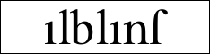
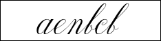

|
幻京書体
幻京書体は2010年以降の公式な書体です。バナーのクリックでDLできます。ご自由にお使いください。
nias氏のフォントが含まれています。ご本家はこちらで、様々なフォントがDLできます。
各書体の可読性はkardinalとの比較で定められています。
●基本書体
幻字には以下の５つの基本書体があります。詳しくはフレディランスをご覧ください。
・kardinal

概要：カーディナル（秋桜）。幻字の原型となる書体。線幅が常に一定。下記lantiaと比べる際はtinaと呼ぶ
可読性：良
用途：幻字の形を教えるのに用いる
・alblant

概要：アルブラント（曼珠沙華）。出版印刷業界の標準書体
可読性：良
用途：新聞・書籍・雑誌・ウェブサイトなどの本文に用いる
・fenlil

概要：フェンリル（金木犀）。標準的な筆記体
可読性：悪
用途：神の言語、アルバザード人にとって不慣れな外国語、手書きの文書などを記すのに用いることがある。高級感と流麗さを出すのに用いる。aの点とxの棒は手書きの場合は無くても構わない
・nalnia

概要：ナルニア（薫衣草）。標準的なイタリック体
可読性：並
用途：ルティア語など、外国語の表記に用いることがある。デザインの世界では、フェンリルとオリヴィアの中間的な存在
・olivia

概要：オリヴィア（薔薇）。標準的なゴシック体
可読性：悪
用途：歴史的な重厚さや荘厳華麗さを出すのに用いる
●派生書体
・lantia

概要：ティナにセリフを付けたもの。スラブセリフ。本文などに用いる
可読性：良
用途：汎用。何にでも使える
・inje

概要：三日月文字。丸みを帯びて柔らかな印象。月をイメージした大文字部がはんなりしている
可読性：良
用途：柔らかで綺麗な印象を与えるときに用いる
・defans

概要：正方形を基準とした大きさの文字。やや小ぶり
可読性：並
用途：やや機械的な印象がある
・fialis

概要：やや縦長のスリムな字。小さく鋭い印象がある
可読性：並
用途：白抜きでロゴなどに使うと非常に見栄えが良い
|